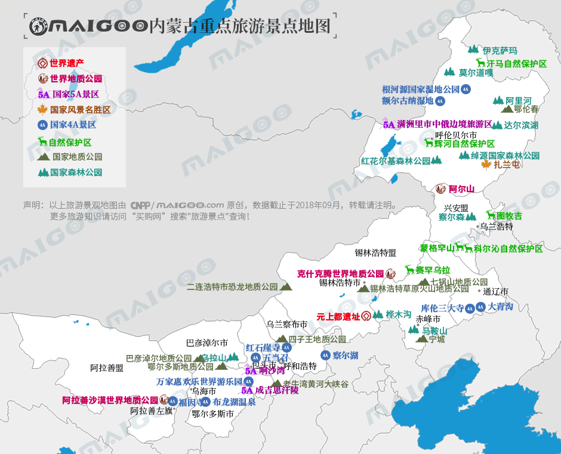
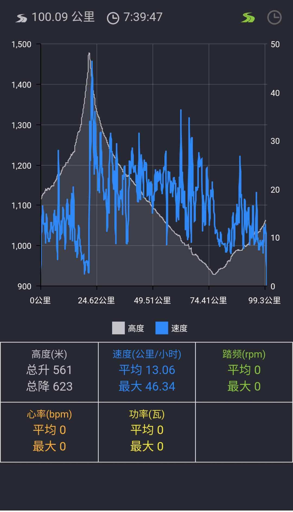
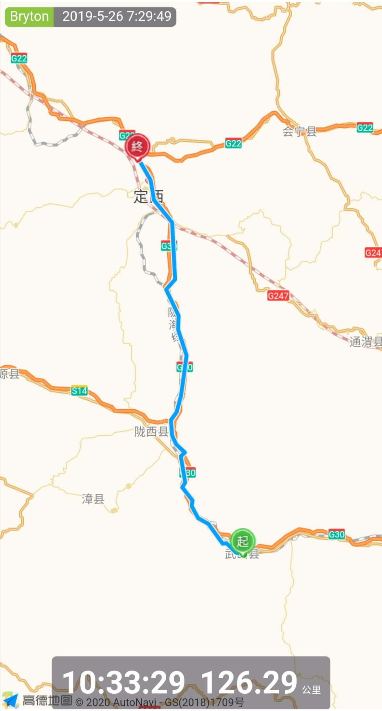
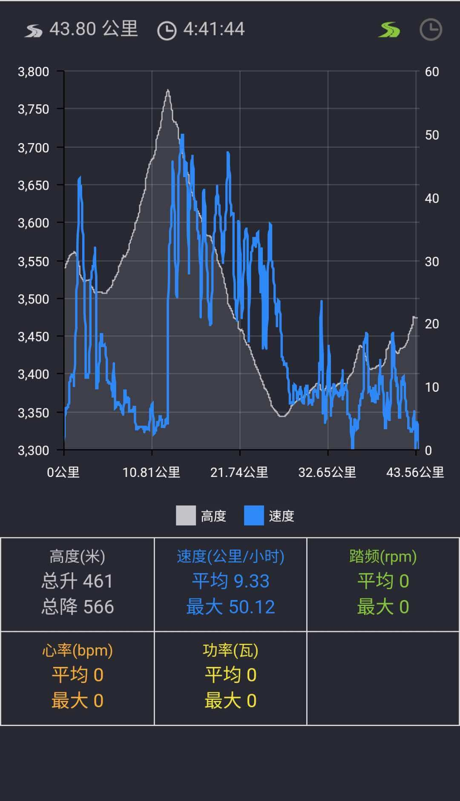
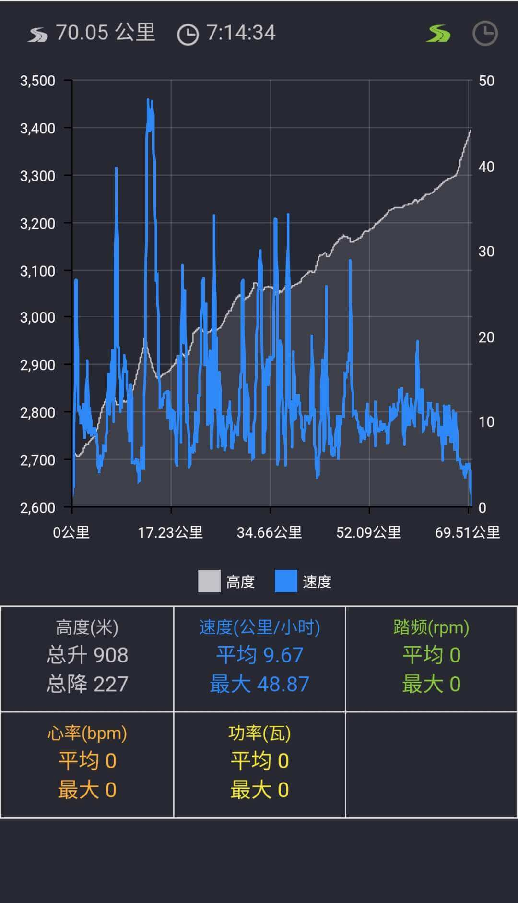

## <i class="fa fa-file-text-o"></i>&nbsp;目录（Table of Contents）
+ [I. 总路线图](#one)
+ [II. 景点](#two)
+ [III. 骑行路线（所含地区：陕西、甘肃、青海）](#three)
- [1、满洲里(七居商务宾馆) - 西旗(思歌腾广场)](#1)
- [2、西旗 - 甘珠尔苏木(蒙古牧民草原上)](#2)
- [3、甘珠尔苏木 - 七仙湖加油站(蒙古包)](#3)
- [4、七仙湖加油站 - 罕达盖公路路政](#4)
- [5、罕达盖公路路政 - 阿尔山(星期天饭店旅店)](#5)
- [6、阿尔山 - 三岔(中国铁建)](#6)
- [7、三岔 - 桃合木苏木(宾海旅馆)](#7)
- [8、桃合木苏木 - 哈日诺尔(小白饭店旅馆)](#8)
- [9、哈日诺尔 - 霍林郭勒(嘉源宾馆)](#9)
- [10、霍林郭勒 - 白音华镇(鑫朋来旅店)](#10)
- [11、西安市 - 南仵村(南仵村广场)](#11)
- [12、南仵村 - 宝鸡市(0起点广场)](#12)
- [13、宝鸡市 - 建河村(篮球场)](#13)
- [14、建河村 - 天水市(途家宾馆)](#14)
- [15、天水市 - 武山县(聚雅宾馆)](#15)
- [16、武山县 - 定西市(万嘉商务宾馆)](#16)
- [17、定西市 - 兰州(佳运公寓民宿)](#17)
- [18、兰州 - 民和回族土族自治县(龙垣民宿)](#18)
- [19、民和回族土族自治县 - 西宁市(混序客栈)](#19)
- [20、西宁市 - 倒淌河(盐业宾馆)](#20)
- [21、倒淌河 - 黑马河(青海湖奇石青年旅舍)](#21)
- [22、黑马河 - 石乃亥(泉源宾馆)](#22)
- [23、石乃亥 - 刚察县(汇鑫假日宾馆)](#23)
- [24、刚察县 - 热水(富华宾馆)](#24)
- [25、热水 - 瓦日尕村(村牧民委员会)](#25)
- [26、瓦日尕村 - 祁连县(天宇商务宾馆)](#26)
- [27、祁连县 - 峨堡镇 - 张掖市(丝路行者青年旅舍)](#27)
- [28、张掖市 - 元山子村(舞台广场)](#28)
- [29、元山子村 - 嘉峪关(牧马人国际青年旅舍)](#29)
- [30、嘉峪关 - 玉门(戈壁驴友青年旅舍)](#30)
- [31、敦煌 - 柳园镇(红柳园商务宾馆)](#31)
- [32、柳园镇 - 星星峡 - 乌鲁木齐(停泊国际青年旅舍)](#32)
<h2 id="one"><i class="fa fa-circle-o-notch fa-spin"></i>&nbsp;总路线图</h2>
<h2 id="two"><i class="fa fa-star-o"></i>&nbsp;景点</h2>

<h2 id="three"><i class="fa fa-spinner fa-pulse"></i>&nbsp;骑行路线（所含地区：陕西、甘肃、青海）</h2>
<h4 id="1">1、满洲里(七居商务宾馆) - 西旗(思歌腾广场)&nbsp;&nbsp;<i class="fa fa-bicycle fa-2x"></i></h4>
<h4 id="2">2、西旗 - 甘珠尔苏木(蒙古牧民草原上)&nbsp;&nbsp;<i class="fa fa-bicycle fa-2x"></i></h4>
<img data-src="../imgs/region-bike/neimenggu/2.jpeg" width="35%" title="2、西旗 - 甘珠尔苏木(蒙古牧民草原上)"/>
<h4 id="3">3、甘珠尔苏木 - 七仙湖加油站(蒙古包)&nbsp;&nbsp;<i class="fa fa-bicycle fa-2x"></i></h4>
<h4 id="4">4、七仙湖加油站 - 罕达盖公路路政&nbsp;&nbsp;<i class="fa fa-bicycle fa-2x"></i></h4>
<h4 id="5">5、罕达盖公路路政 - 阿尔山(星期天饭店旅店)&nbsp;&nbsp;<i class="fa fa-bicycle fa-2x"></i></h4>
<h4 id="6">6、阿尔山 - 三岔(中国铁建)&nbsp;&nbsp;<i class="fa fa-bicycle fa-2x"></i></h4>

<h4 id="7">7、三岔 - 桃合木苏木(宾海旅馆)&nbsp;&nbsp;<i class="fa fa-bicycle fa-2x"></i></h4>
<h4 id="8">8、桃合木苏木 - 哈日诺尔(小白饭店旅馆)&nbsp;&nbsp;<i class="fa fa-bicycle fa-2x"></i></h4>
<h4 id="9">9、哈日诺尔 - 霍林郭勒(嘉源宾馆)&nbsp;&nbsp;<i class="fa fa-bicycle fa-2x"></i></h4>
<h4 id="10">10、霍林郭勒 - 白音华镇(鑫朋来旅店)&nbsp;&nbsp;<i class="fa fa-bicycle fa-2x"></i></h4>
<h4 id="11">11、西安市 - 南仵村(南仵村广场)&nbsp;&nbsp;<i class="fa fa-bicycle fa-2x"></i></h4>
<h4 id="12">12、南仵村 - 宝鸡市(0起点广场)&nbsp;&nbsp;<i class="fa fa-bicycle fa-2x"></i></h4>
<h4 id="13">13、宝鸡市 - 建河村(篮球场)&nbsp;&nbsp;<i class="fa fa-bicycle fa-2x"></i></h4>
<h4 id="14">14、建河村 - 天水市(途家宾馆)&nbsp;&nbsp;<i class="fa fa-bicycle fa-2x"></i></h4>
<h4 id="15">15、天水市 - 武山县(聚雅宾馆)&nbsp;&nbsp;<i class="fa fa-bicycle fa-2x"></i></h4>
<h4 id="16">16、武山县 - 定西市(万嘉商务宾馆)&nbsp;&nbsp;<i class="fa fa-bicycle fa-2x"></i></h4>

<h4 id="17">17、定西市 - 兰州(佳运公寓民宿)&nbsp;&nbsp;<i class="fa fa-bicycle fa-2x"></i></h4>
<h4 id="18">18、兰州 - 民和回族土族自治县(龙垣民宿)&nbsp;&nbsp;<i class="fa fa-bicycle fa-2x"></i></h4>
<h4 id="21">19、民和回族土族自治县 - 西宁市(混序客栈)&nbsp;&nbsp;<i class="fa fa-bicycle fa-2x"></i></h4>
<img data-src="../imgs/region-bike/neimenggu/19.jpeg" width="35%" title="19、民和回族土族自治县 - 西宁市(混序客栈)"/>
<h4 id="22">20、西宁市 - 倒淌河(盐业宾馆)&nbsp;&nbsp;<i class="fa fa-bicycle fa-2x"></i></h4>
<h4 id="23">21、倒淌河 - 黑马河(青海湖奇石青年旅舍)&nbsp;&nbsp;<i class="fa fa-bicycle fa-2x"></i></h4>
<h4 id="24">22、黑马河 - 石乃亥(泉源宾馆)&nbsp;&nbsp;<i class="fa fa-bicycle fa-2x"></i></h4>
<h4 id="25">23、石乃亥 - 刚察县(汇鑫假日宾馆)&nbsp;&nbsp;<i class="fa fa-bicycle fa-2x"></i></h4>
<h4 id="26">24、刚察县 - 热水(富华宾馆)&nbsp;&nbsp;<i class="fa fa-bicycle fa-2x"></i></h4>
<img data-src="../imgs/region-bike/neimenggu/24t.jpeg" width="35%" title="24、刚察县 - 热水(富华宾馆)"/>
<h4 id="27">25、热水 - 瓦日尕村(村牧民委员会)&nbsp;&nbsp;<i class="fa fa-bicycle fa-2x"></i></h4>

<h4 id="28">26、瓦日尕村 - 祁连县(天宇商务宾馆)&nbsp;&nbsp;<i class="fa fa-bicycle fa-2x"></i></h4>
<h4 id="29">27、祁连县 - 峨堡镇 - 张掖市(丝路行者青年旅舍)&nbsp;&nbsp;<i class="fa fa-bicycle fa-2x"></i></h4>

<h4 id="30">28、张掖市 - 元山子村(舞台广场)&nbsp;&nbsp;<i class="fa fa-bicycle fa-2x"></i></h4>
<h4 id="31">29、元山子村 - 嘉峪关(牧马人国际青年旅舍)&nbsp;&nbsp;<i class="fa fa-bicycle fa-2x"></i></h4>
<img data-src="../imgs/region-bike/neimenggu/29.jpeg" width="35%" title="29、元山子村 - 嘉峪关(牧马人国际青年旅舍)"/>
<h4 id="32">30、嘉峪关 - 玉门(戈壁驴友青年旅舍)&nbsp;&nbsp;<i class="fa fa-bicycle fa-2x"></i></h4>
<img data-src="../imgs/region-bike/neimenggu/30t.jpeg" width="35%" title="30、嘉峪关 - 玉门(戈壁驴友青年旅舍)"/>
<h4 id="33">31、敦煌 - 柳园镇(红柳园商务宾馆)&nbsp;&nbsp;<i class="fa fa-bicycle fa-2x"></i></h4>
<h4 id="34">32、柳园镇 - 星星峡 - 乌鲁木齐(停泊国际青年旅舍)&nbsp;&nbsp;<i class="fa fa-bicycle fa-2x"></i></h4>